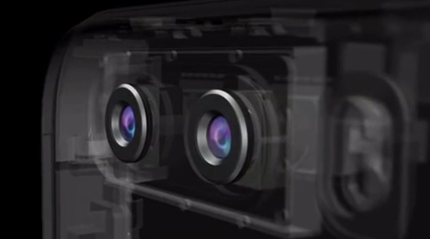
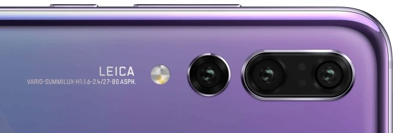
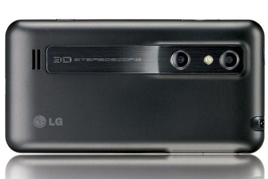

카메라의 구조나 작동 방식에 관심이 많다 보니 스마트 폰 등의 모바일 기기에 달린 카메라 모듈에도 흥미가 동한다. 사실, 스마트폰으로 대변되는 모바일 기기가 최근 우리 생활 방식에 많은 변화를 가져왔고, 그 어떤 카메라보다 많은 이미지와 동영상을 만들고 있으니 우선해서 다뤄야 하는 대상이 아닐까도 싶다. 하지만 카메라 모듈의 제한된 크기로 인한 광학적/물리적 한계가 명확히 있다는 점 등으로 사실 고화질의 이미지를 요하는 용도에는 적절하지 않아서 그 효용이 제한적인 것 또한 현실이다. 그 탓에 좀 더 우수한 광학 성능과 고품질의 이미지 결과물을 만들 수 있는 카메라에 더 관심이 많다 보니 그동안 언급할 기회가 별로 없었지 싶다.
카메라 모듈로 대표되는 이런 휴대용 전자기기의 카메라 시스템은 제약 조건이 꽤 많다. 일단 휴대용 모바일 기기의 일부 부속에 해당해서 차지하는 공간의 제한으로 작아야하고 저렴해야 하며 동시에 (대부분의 휴대용 전자기기 들이 그러하듯이) 전력 관리 문제 등에서도 자유롭지 못하다. 먼저 작고 저렴함을 실현할 수 있는 가장 큰 요인은 이미지 프로세싱을 위한 장치가 스마트 폰이나 태블릿/노트북 등에 이미 존재하므로 카메라 모듈은 그저 이미지 센서와 광학부로만 구성 가능하여 비교적 단순하고 최소한의 구조로 제조 가능한 점이다. 그러나 매우 작고 저렴하고 다양한 기기에 적용할 수 있는 장점의 이면에는 그 물리적 크기 제한(이미지 센서 크기 및 광학 부분의 공간의 제한)으로 인한 광학적 성능 또한 매우 제한적일 수밖에 없고(기존의 광학 설계에서는 광학요소의 중첩을 통한 광학 수차 감쇄와 화질 개선 방식이었으므로 광축과 평행한 종적 공간이 필요한데, 두께 제한에서 자유로울 수 없는 모바일 카메라 모듈은 구조적으로 여러 난점이 있을 수밖에 없다) 일응 전용 카메라(DSLR, 또는 미러리스 카메라 등)와 비교할 때는 상대적인 저성능(화소수만을 의미하는 것이 아니라 결과물의 이미지 품질에서의 저성능)을 벗어나기 어렵다. 광학 구성을 갖는 카메라와의 경쟁에서 상대적인 저성능을 돌파하기 위한 여러 기술적 시도 중의 하나가 이번 수다의 주제로 삼은 듀얼 또는 멀티(트리플 등등) 카메라 모듈 시스템이라고 생각한다.
흔히 지금은 두개가 즐겨 사용되어 듀얼 카메라 모듈로 불리지만, 사용자의 니즈(Needs)나 시장의 흐름에 따라 트리플이나 더 많은 수의 카메라 모듈이 결합된 형태도 될 수 있겠다. 작년을 기준으로 다수 등장한 듀얼 카메라 모듈의 일반적인 특징에 대해서 대충 다뤄보자. 여담으로 이 수다쟁이는 아직도 Iphone 5를 사용하고 있고 듀얼 카메라 모듈이 달린 제품을 제대로 사용해 보지 못했다. 웹 검색 등을 통해 알게 된 일반적인 내용과 개인적인 상념의 결과물이므로 수다에서 떠든 내용과 실제의 성능과 차이가 있을 수 있다.

▶ 다양한 초점거리/화각 대응의 듀얼 카메라 모듈
듀얼 카메라 모듈이라고 불리지만, 기능적으로 구분되는 꽤 다양한 유형이 존재하는 것 같다. 대충 이를 정리해 보면, 설치 공간의 제약과 제조 편의성 및 제조 가격 문제로 인해 대부분의 카메라 모듈은 고정 초점 방식의 광학 구조가 일반적이고, 촬영 시양 범위/화각에 대응하기 위해서는 디지털 줌 기능을 활용할 수밖에 없으므로 디지털 줌은 확대 배율에 따라 이미지 센서의 일부분 만을 사용하는 방식이다. 그렇잖아도 작을 수밖에 없는 카메라 모듈의 이미지 센서(촬상면)의 조건에서 그중 일부분만을 사용하는 디지털 줌 방식은 촬영된 이미지의 화질(해상력/분해능, 선예도 등등) 저하는 필연적일 수밖에 없다. 이 문제를 해결하기 위해서 등장한 것이 각각 다른 초점거리의 렌즈를 활용하는 듀얼 카메라 모듈의 등장이 아닐까 싶다. 조금 더 부연 설명하자면, 하나의 카메라 모듈은(실제로는 하나의 카메라 모듈에 두 개의 광학부와 이미지 센서가 있는 형태) 광각을 담당하고 하나는 표준 또는 망원에 해당하는 영역을 담당하는 방식이다. 현재 가장 대표적이고 일반적인 듀얼 카메라 방식이라 생각된다.
다양한 초점거리/화각 대응을 위한 또 다른 방법으로 하나의 이미지 센서에 전면의 렌즈를 다양한 초점거리의 단 렌즈로 변경할 수 있는 다중 렌즈 방식을 생각해 볼 수 있다. 기존 카메라 모듈 앞에 추가하는 다중 렌즈 방식의 어댑터가 제품화 되어있지만, 이 또한 화질(특히 왜곡 발생) 문제와 포커싱 성능 저하 등의 문제에서 자유롭지 못하다. 그리고 카메라 모듈 자체에서 전면의 렌즈를 교환하는 방식 또한 카메라 모듈의 가격과 안정적인 구조, 성능 등 전반적인 상황과 효용을 비교해보면 듀얼 또는 트리플 카메라 모듈 시스템이 더 비교 우위에 있다고 생각한다.
▶ 복수 이미지 합성을 통한 촬영 이미지 품질 향상의 듀얼 카메라 모듈
작은 이미지 센서 크기에 고화소의 집적은 필연적으로 화소/픽셀 하나당 수광율 저하를 가져올 수 밖에 없으므로 동일한 화소의 큰 이미지 센서를 갖는 카메라에 비해 촬영 결과물의 이미지 품질(화질)에서 상대적으로 열악하다. 따라서 다수의 사진의 데이터를 상호 보완하여 노이즈를 제거하고 질적 향상을 도모하는 방식 즉, 디지털 합성이 꽤 효과적인 대안이지 싶다. 이는 연속 촬영을 통한 브라케팅과 이를 합성하는 방식은 거의 유사하지만, 두 개의 카메라를 통해 연속 촬영 없이 한번 촬영으로 두 개의 이미지를 얻을 수 있고 연속 촬영에서 흔들림 등으로 인한 두 이미지의 미묘한 차이 문제를 해결할 수 있으니 유용하지 싶다.
풍경 등 명도 차이가 큰 촬영 조건에서 유용한 HDR(High Dynamic Range) 기능은 다이나믹레인지가 넓지 않은 카메라의 단점을 보완하는 꽤 효과적인 방식이고 여러 이미지 합성을 통한 화질 개선하는 대표적인 예이지만, 단일 카메라 모듈에서는 HDR 모드를 선택하여 일반적으로 다른 노출 값으로 3장의 이미지를 연속 촬영한 후 이를 합성하여 한장의 이미지에 보다 폭넓은 명도 표현과 보다 세밀한 계조 표현이 가능한 장점이 있었다. 그리고 연속 촬영되는 동안 동일한 프레임을 유지하여야 한다는 단점도 있었지만, 한편으로는 HDR 촬영 모드를 선택하고 연속 촬영과 이를 이미지 프로세싱하는 과정 후에 하나의 결과물을 확인하는 등 구분하기 쉬웠지만, 최근의 듀얼 카메라 시스템에서는 명도 차이가 큰 촬영 조건에서는 자동으로 HDR 두장의 이미지를 얻고 이미지 프로세싱이 이루어져 결과물을 보여주므로 HDR이 적용되었는지 알아채지 못하는 경우도 꽤 흔한 듯하다.(결과물의 HDR 효과에 있어서는 여러 장으로 합성하는 것이 더 뛰어나겠지만, 촬영과 합성하는 이미지 수가 많을수록 이미지 프로세싱과 합성 과정에서 처리하여야 할 데이터가 증가하므로 일장일단이 있겠다)
듀얼 카메라의 초점거리/화각이 동일하다면 더 효과적이겠지만, 반드시 동일한 초점거리/화각일 이유는 없어 보인다. 즉, 하나는 (초)광각, 하나는 일반적인 카메라 모듈의 화각으로 구성된 듀얼 카메라에서 촬영된 두 이미지는 시야 범위가 다르겠지만, 광각으로 촬영된 이미지를 일부 크롭 하여 동일한 시야 범위의 이미지로 하고 두 개의 이미지를 합성하는 방법 등 다양하게 활용 가능하지 싶다.(카메라 모듈의 일반적인 초점거리는 35mm FF 환산 28mm 정도에 해당하므로, 앞에서 표현한 광각은 환산 화각에서는 초광각과 광각으로 표현할 수도 있겠다) 크롭으로 인해 일부 화질 저하가 있을 수 있지만, 두 이미지의 합성을 통한 화질 보간의 의미에서는 크게 문제 되지 않으리라 생각한다. 비슷한 이유에서 두 개의 카메라의 화소/픽셀 수 또한 반드시 동일해야 할 이유는 없어 보인다. 따라서 메인 캠과 서브 캠의 화소 차이가 있는 듀얼 카메라도 다수 존재한다.
▶ RGB 컬러 이미지 센서와 흑백 이미지 센서의 매칭 듀얼 카메라 모듈
화웨이의 스마트폰 카메라 모듈 시스템에 자주 활용되는 방식인데, 이 방식 또한 듀얼 카메라 모듈로서 꽤 재미있는 방식이라고 생각된다. 컬러 이미지지가 넘쳐나는 세상에 칼라 이미지 센서와 흑백 이미지 센서의 듀얼 카메라 모듈이 조금 의아할 수 있고, 흑백 이미지 촬영용과 칼라 이미지 촬영 용도로 구분하여 사용할 수도 있지만, 흑백 이미지 센서는 컬러(RGB) 이미지 센서와 비교해서 가지는 뚜렷한 장점도 있다.
흑백 이미지 센서는 컬러(RGB) 이미지 센서와 달리 이미지 센서 전면에 컬러 필터가 생략되므로 RED,Green, Blue만을 선택적으로 투과하여 수광하는 컬러 이미지 센서에 비해 동일한 조건에서 높은 수광률을 보인다. 이미지 센서 픽셀의 수광률은 화질과 밀접한 영향을 미칠 수밖에 없으므로 컬러(색정보)를 제외하고 분해능, 선예도, 계조, 노이즈 감소에서 더 뛰어날 수밖에 없다. 따라서 흑백 이미지 센서를 활용하면 컬러 이미지 센서보다 더 뛰어난 흑백 이미지를 얻을 수 있을 뿐만 아니라, 두 이미지 합성을 통해 화질 개선된 합성 이미지에 효과적이고 저조도에서 더 뛰어난 화질 확보에도 유리하지 싶다. 하지만, 컬러와 흑백의 두 이미지 합성으로 화질의 개선 측면에서 계조와 디테일, 암부 표현에서 디테일을 잘 표현하는 장점은 있지만, 상대적으로 색정보의 양은 두 개의 컬러 이미지 센서를 이용하는 듀얼 카메라 모듈 방식과 비교해서 상대적으로 부족할 개연성이 높고 따라서 충실한 색의 재현 부분에서는 상대적으로 단점이 나타날 수 있다. (이는 사용자의 성향이나 취향에 따라 다르게 평가될 수 있는데, 색보다는 명도 차이에 의한 계조나 디테일 등에서 이미지 품질이 더 좋다고 느낄 수도 있고, 디테일한 색 정보에 더 높은 평가도 가능한데, 아무래도 시각적으로는 전자의 경우가 더 낫다고 평가하는 경우가 많지 싶다) 이는 웹용의 작은 이미지 사용에서는 눈에 띄지 않겠지만, 큰 디스플레이 장치에서 재생하거나 큰 인쇄/인화, 그리고 이미지 후반 작업 등에서는 드러나지 않을까. (스마트폰으로 촬영된 이미지가 이런 용도로 활용되는 경우는 흔치 않겠지만,)
사람의 시각이 색보다는 명도 인식에 더 민감하고, 어두운 곳에서는 색의 구분보다는 명암의 구분이 주로 인식되는 등의 특징에 대해 사람 눈의 구조와 인식 방식 그리고 이에 대응한 카메라 기술에 대해서도 논하고 싶지만, 글이 너무 길어지고 주제와는 살짝 동떨어진 내용이라 다음을 기약해야 겠다. 하지만 사람 시각의 이러한 특성(색보다는 밝기 차이에 민감)과 흑백 이미지와 컬러 이미지 합성을 통한 화질 개선 방식은 관련된 부분이 꽤 있고 흥미로운 지점이 있어 보인다.
화웨이나 ZTE 등 중국 제조사의 모바일 기기와 관련해서는 백도어 프로그램의 존재 문제로 최근 보안 관련 이슈가 있어서 언급하지 않고 그냥 지나치기엔 마음이 편치 않다. (백도어를 통한 불법적인 정보 수집이 비단 화웨이 등의 중국 업체 제품에만 국한되느냐 하는 의문도 존재한다. 아이폰 등에는 서양발 백도어 프로그램이 없다고 장담할 수 있을까? 이에 대한 답은 각자의 생각에 맡기고,) 그 외에도 화웨이의 듀얼/트리플 카메라 모듈이 장착된 제품과 관련해서 몇 가지 그릇된 행태가 눈에 띄는데, 그 첫 번째는 Leica 이름을 내세운 마케팅과 소비자를 현혹하는 표현 등이 거슬린다. 먼저 Leica 관련 마케팅은 카메라에 관심이 있는 사람이라면 누구나 한 번씩은 들어봤을 라이카 브랜드를 화웨이 자사의 스마트 폰 등의 카메라 성능 홍보에 활용하고 있는데, 사실 Leica는 명성과 기술력이 광학 제조사이자 카메라 제조사이지만, 카메라 모듈 등과 같은 부분에서 관련 제품을 전혀 만들지 않는 회사이고 해당 관련 기술력도 있다고 생각되지 않는다. (라이카는 매우 뛰어난 광학 기기와 카메라 등을 만들고 고가의 디지털 카메라를 판매한다지만, 라이카의 이런 기술은 35mm 필름 규격이나 그보다 조금 작은 컴팩트 카메라에서 얻은 명성으로 사실 카메라 모듈에 어떤 기술력을 가지고 있다고 생각되지 않으며, 디지털 이미지 처리 기술 또한 경쟁력이 있다고 할 수 없고 파나소닉 등과 기술 제휴를 통해서 이를 보완했던 것은 익히 알려진 사실이다) 해당 화웨이 제품에 라이카 기술 제휴라고 명시할 만한 것이 있는 것일까? 아마도 마케팅 측면에서 이루어진 두 회사의 협력은 있으니 이렇게 해당 브랜드를 제품에 명기하고 홍보하는 것이겠지만, 라이카의 광학 기술이 들어간 것처럼 소비자를 현혹하는 이런 방식은 눈속임에 불과하지 싶다. 그리고 화웨이 제품에 들어가는 카메라 모듈은 중국 내 기업에서 제조되고 있으며, 들리는 일설에는 라이카에서는 해당 카메라 모듈에 기술적 참여를 하지 않았고, 이미지 처리 시 색감에 대해서 조언/협업한 바 있다는 발표를 하였다는데 사실 확인이 필요한 내용이다.(소비자에게 혼란을 주는 이런 무책임한 협업 행태에 있어서는 라이카도 실망스럽기 그지없다. 카메라 모듈에 Vario-Summilux-H라고 표기된 아래 사진을 참고하자. 이건 좀 심하다 싶은데 추가적인 감상은 자제해야겠다)

그리고 위 이미지에서와 같이 ASPH라고 명기해서 비구면(Aspherical) 렌즈 요소를 사용하였다고 표시되어 있는데, 이는 사실이다. 하지만, 현재 만들어지는 대부분의 카메라 모듈에 비구면 요소가 사용되고 있고 이는 광학성능을 위해 필요하지만 일반적으로 SLR 카메라 등의 교환용 렌즈에 사용되던 비구면 렌즈와는 질적으로 차이가 있다. 레진(합성수지의 일종)으로 만들어지는 카메라 모듈의 렌즈 요소들은 사출 성형으로 만들어지고 비구면 요소 또한 광학 구성을 단순화하고 성능 대비 제조비용을 줄이기 위해 활용된다고 할 것이다. DSLR 카메라 렌즈 등에서 비구면 요소를 사용해서 좀 더 광학적 성능을 개선하고 이를 홍보하기 위해 표시하던 행태를 다른 제조사의 대부분의 카메라 모듈 등에도 버젓이 적용되는데 이를 마케팅적 요소로 활용하는 것이 조금은 낯 뜨겁다. 그리고 27-80 등으로 표시하는 것도 사실 이치에 맞지 않은 표기다. 이는 35mm 풀프레임 규격으로 환산해서 나온 수치이지만, 해당 카메라 모듈의 실제 광학부 스펙은 작은 이미지 센서로 인해 해당 초점거리와 전혀 관련 없다. 소비자의 이해를 돕기 위한 표현이라고 애써 이유를 댈 수도 있겠지만, 그렇다면 이는 35mm FF 환산이라는 내용 정도는 표시하여야 하지 않을까.
▶ 얕은 피사계 심도 효과(일명 아웃 포커싱) 구현의 듀얼 카메라 모듈
이 또한 두 개 이상의 이미지 합성을 통해서 구현하는 효과인데, 두 개의 이미지의 초점(focus)이 맞는 영역을 다르게 촬영하고 이를 합성하여 카메라 모듈의 광학적 성능의 한계로 표현할 수 없는 얕은 심도의 이미지를 구현하는 방법이다. 흔히 아웃포커싱 효과 등으로 불리는 인물 사진용 모드는 카메라 모듈의 한계 탓에 소프트웨어적인 합성을 통해 만들어지는데, 이미지 프로세싱과 합성의 과정에서 다른 데이터 값을 가지는 영역 경계면의 부자연스러움 등이 나타나는 경우도 있고 실제 광학적 효과에 의한 얕은 심도의 이미지와 비슷한 효과를 의미할 뿐 아직까지 그 질적인 차이(특히 피사체의 거리에 따른 자연스러운 심도 표현) 등을 구현하기에는 역부족으로 보인다.
스마트 폰 등의 모바일 기기에 달린 카메라 모듈이 얕은 피사계 심도 효과를 구현하지 못하는 것은 광학적/물리적 크기 한계에 의해 필연적일 수밖에 없다. 간혹 f/1.6 등의 수치로 인해 얕은 심도가 가능하리라 착각할 수 있지만, f/값은 노출에 대한 정의이므로 심도의 정도를 표현하는 개념은 아니다. (이런 이유로 위의 화웨이 스마트폰의 경우와 같이 1.6-2.4/27-80이라고 표기하면 비난을 면할 수 없다. 24mm에서 f/1.6 또는 80mm 초점거리의 f/2.4의 앝은 심도 표현이 가능한 것으로 착각하기 쉽다)
스마트폰 카메라로 촬영된 이미지의 얕은 심도로 촬영된 것처럼 표시하는 합성/변형하는 방법에서 내부 알고리즘은 모두 동일한 것은 아닌 듯하고 제각각 부르는 명칭도 다르다. 하지만 Apple의 '인물 사진(Portrait Mode)' 모드나 삼성의 '라이브 포커스 모드' 경우에는 피사계 심도 효과라는 기능을 통해 촬영된 이미지의 거리 정보를 몇 개의 단위/층으로 분할하여 3D 모델링하고 각 층의 블러 정도를 조절하여 하나의 이미지로 합성하는 방식을 이용하는 것으로 생각된다. 그리고 이런 합성의 방법이 실제 광학계의 얕은 심도로 촬영된 이미지와 비교해서 장점이 있다면 촬영 후에도 배경 흐림의 정도를 어느 정도 선에서 편집할 수 있는 점이다. 하지만 이 또한 합성의 문제로 인해 조악한 합성 사진 등에서 경험했 듯이 경계면의 부자연스러움이 나타날 수 있어서 이미지 품질 면에서 그리 좋은 점수를 주기는 어렵다.
최근의 변화 중 눈에 띄는 것은 애플의 ISO 11에 등장한 HEIF 포맷인데 이는 장차 JPEG를 대체할 새로운 방식으로 주목받고 있다. 이는 H.265 코덱의 HEVC(High Efficiency Video Compression) 영상 포맷을 기반으로 한 컨테이너 포맷인데 여러 장점이 있지만, 앞에서 설명한 바와 같이 여러 층으로 분할된 이미지의 정보를 각각 저장함으로써 각각의 거리 정보를 저장하는 것이 가능한 점에 주목하게 된다.(현재의 방법은 합성을 통해 최종적으로 JPEG 이미지로 만들어지므로 이런 거리 정보는 남지 않는다) 이에 대해서는 기회가 닫는다면 별도의 수다로 다루어 보자. 사실, HEIF의 높은 압축률로 JPEG와 동일한 용량에서 더 많은 데이터를 담을 수 있고 10bit 색정보를 저장할 수 있는 장점과, HEVC와 함께 기존의 이미지 포맷인 JPEG와 영상 포맷 MP4를 조만간 대체할 것이 유력하므로 관심이 가지 않을 수 없다. UHD로 불리는 초고화질 화상의 디스플레이/재생 환경(모니터, TV) 등이 널리 보급되면 사진 이미지 또한 이런 고화질(10 bit 색정보와 HDR, 고속 프레임 레이트)을 활용하는 새로운 이미지 포맷으로 대체되는 것은 이미 예정된 수순에 불과하다고 생각한다.
▶ 시차(Parallax)를 통한 3D 입체 이미지 구현 듀얼 카메라 모듈
현재 스마트 폰에 구현된 대부분의 듀얼 카메라 모듈은 효율적인 공간 이용 및 내부 배선 구조 등의 이유로 매우 인접한 위치에 설치되어 하나의 모듈과 다를 바 없이 만들어지지만, 두 카메라의 물리적 위치를 일정 거리 확보하여 위상차를 이용한 보다 정밀한 AF 구현의 이점도 있지 싶다. 그리고 두 카메라의 시차(Parallax)를 이용한 3D 이미지 구현이 가능하다. 모든 방향의 진정한 3D 이미지는 아니지만, 우리 눈이 인식하는 수준 정도의 고정된 관찰 시점에서의 입체감/공간감을 일정 간격 떨어진 두 개의 카메라 모듈에서 만들어진 이미지를 이용하여 구현하는 것이 가능하다. 하지만, 이 3D 디스플레이 장치에서 이를 다시 구현하는 문제와 이를 보여주는 재생 환경에서 사람의 시각으로 인식할 때 어지러움증의 문제 등을 완전히 해결하지 못한 부분이 있다. 하지만 VR 기기 등의 기술 발전과 보급이 일반화된다면 다시 한번 주목받을 가능성이 크다.

그리고 일정 간격을 두고 장치된 듀얼 카메라 모듈에서 개인적으로 주목하는 또 다른 장점은 두 카메라로 얻은 이미지의 위상차를 이용한 더 정밀하고 빠른 AF(위상차 검출)가 가능하지 않을까 싶다. 작고 심도가 꽤 깊은 카메라 모듈의 특성상 일반적인 사용 환경에서의 포커싱의 속도에서는 현재 방식으로도 큰 문제는 없지만, 두 개의 카메라 설치 간격 확보를 통한 기선/기장선이 충분히 확보되어 이미지 위상의 비교는 더 정밀하고 쾌적한 AF 실현에 도움이 될 수 있겠다. (해당 기술은 이미 구현되어서 이용되고 있을 가능성도 높아 보인다)
Powered by Brian Kim.